Hurb · Design Systems
New Visual
Language
The challenges of creating, validating and delivering the first release of a new visual language.
The new language on the website's home page.
One brand, two languages
In 2020, Hurb was expanding, adapting its business and technology to an internationalization project, to sell dreams to travelers from all over the planet. At the same time, the product design team was testing and tweaking their component library to kick-start their first Design System.
Another relevant scenario was the lack of communication between the product design and marketing teams, creating usability problems on platforms and inconsistency in the application of the visual identity.
Before continuing with the first library, we then decided that we would need to review the entire visual language collaboratively, making it more universal and up-to-date, translating the brand's values and personality.
Starting with the principles
To get the project off the ground, we decided to create our design principles. We gathered existing branding and persona studies with feedback and updated user reviews at CFV (Traveler Happiness Center — call center), Reclame Aqui and App stores.
We carried out a dynamic with the entire design team — product and marketing — divided into 4 stages:
What are the principles and presentation of the collected material.
What should we do for the user vs. what should we not do.
Name of the principles chosen.
Maslow's Hierarchy dynamics.
The workshop
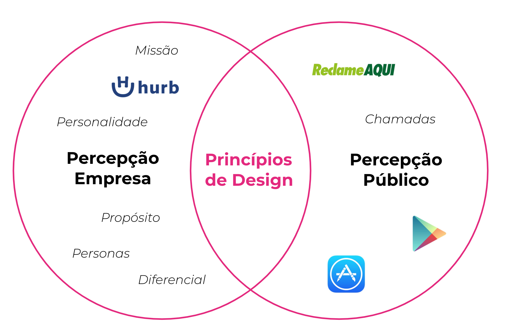
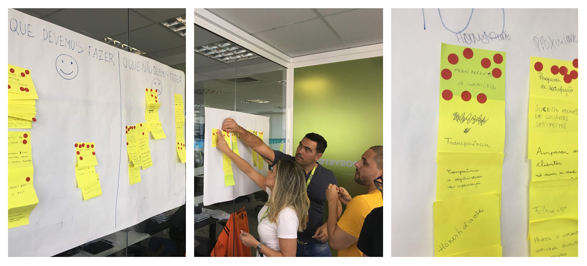
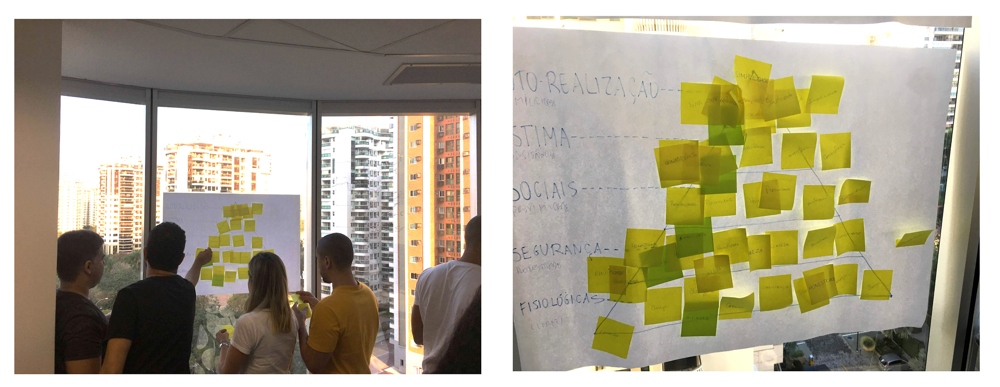
The five principles
Be clear and objective
Be honest
Stay close to the traveler
Be consistent
Do more with less
The design team posted an animation on social media to share the created principles.
Analyzing all that we already had
We gathered all the screens and interface components following the purchase flow, advertising pieces and banners and highlighted all the points where we could apply the principles, analyzing the fundamentals — colors, shapes, typography and spacing — the photography and even the tone of voice in applying the texts.
What we found
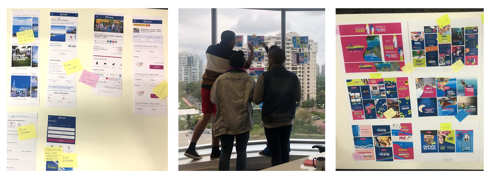
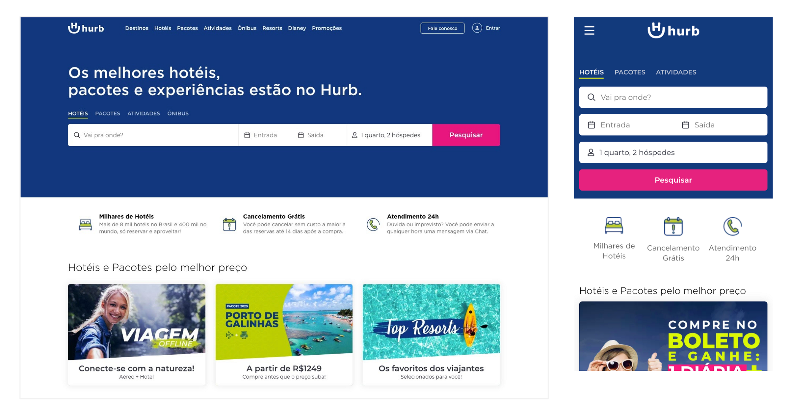
Creating our moodboard
We proposed a new dynamic for raising brands that apply one or more of these principles. For this exercise, we focused on interfaces for the product team and advertising for the branding team. In order to differentiate from other players, we brought companies from different segments, such as fintechs, marketplace and real estate market.
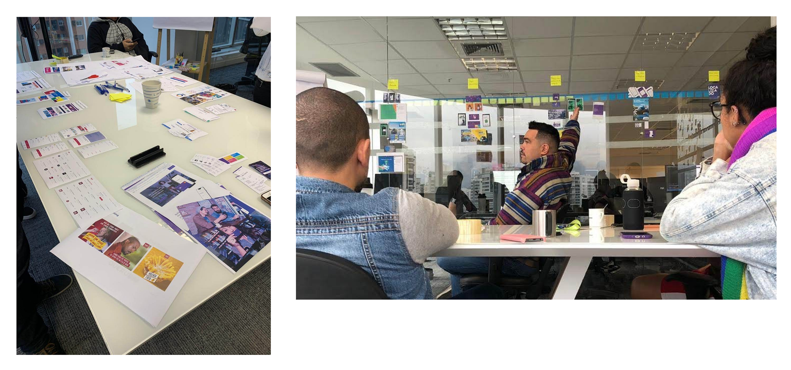
We associated the pieces collected in the moodboard with each of our 5 principles.
All hands-on
After mapping the points for improvement and still inspired by the examples on the moodboard, we carried out a co-creation exercise for the homepage of the site, as it is the traveler's main point of discovery, exploring new paths and approaches, with the application of the principles created.
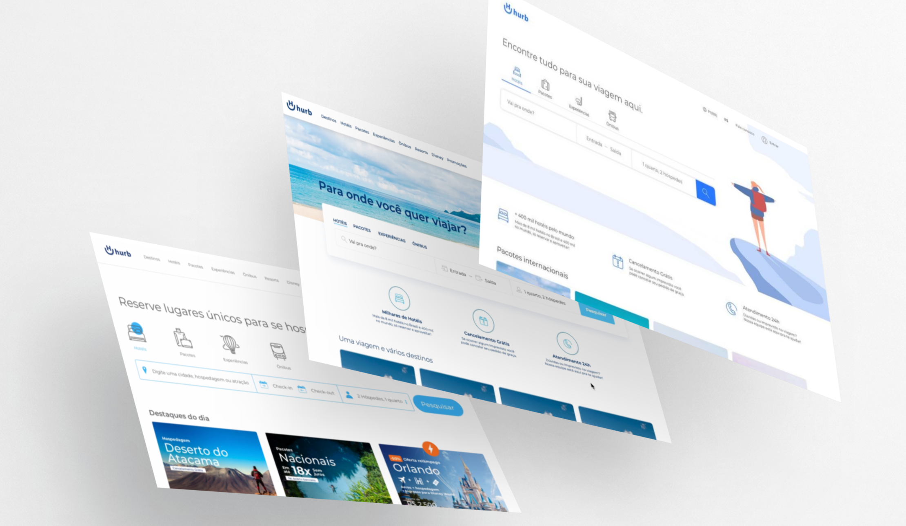
Screens created in the co-creation exercise for the website's homepage.
Reviewing the fundamentals
We identified some visual patterns on the screens presented — the use of colors, iconography, illustration and spacing — and with that we already had some guidelines for a new language.
Colors and graphics
We recreated the brand's institutional color, making it more lively and contemporary. We decided that it would also be the primary color, with its variations in use, adding more identity and simplicity to the pieces. We added complementary colors and graphics, associated with the destinations most desired by our travelers.
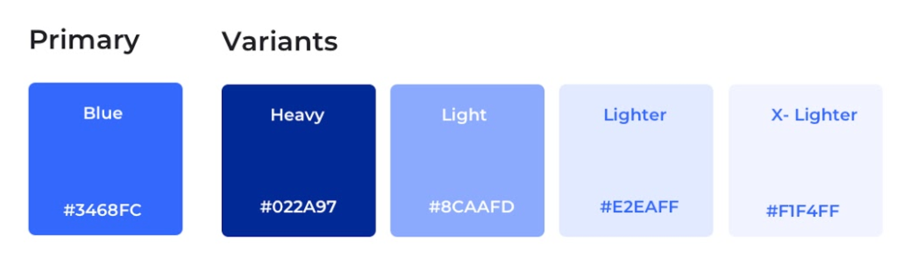
New primary color variations.
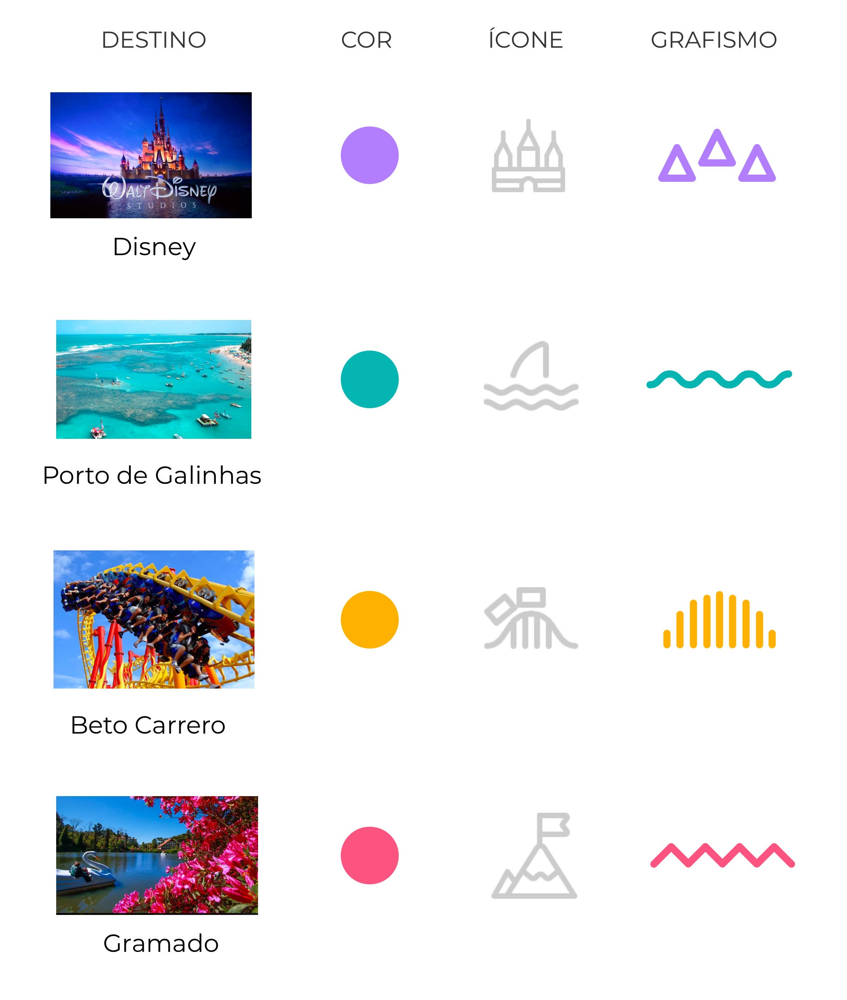
Colors and graphics inspired by the most sought-after destinations by travelers.
Spacing & typography
We used the 8pt grid to define the spacing of the interface elements and for the typographic application.
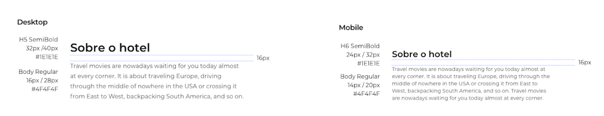
Study of responsive application of paragraphs.
Illustration
We did a dynamic to define the illustration style, using the brand's principles and personality, and adapted the colors and shapes — mixing some illustration styles and creating a library of our own to facilitate the application by the team.
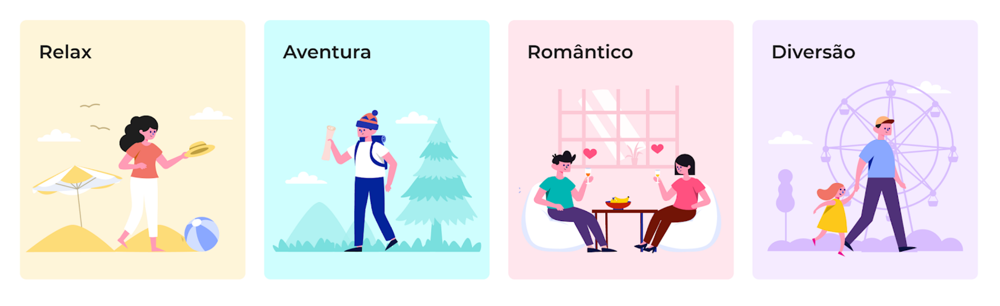
Use of the illustration to highlight the navigation by traveler profile.
And now, how to validate it?
With all fundamentals reviewed and elements adapted, we raised some points of attention to validate the new aesthetic with our users.
- Is the new interface related to the principles created, from the point of view of the traveler?
- Will the older audience find a cleaner, more contemporary approach strange?
- Will the user perceive the product to be more expensive, or to be related to another category?
Online survey
Applying the first impression test, which aims to help us understand how people feel about a concept, interface or experience, we chose some adjectives from Microsoft's Product Reaction Cards scale, related to the principles and questions raised. We asked users to mark 5 or more words that described the new interface and then asked what they thought of the new aesthetic. We reached 300,000 users in our base, separated into 2 age groups, using the UsabilityHub platform.
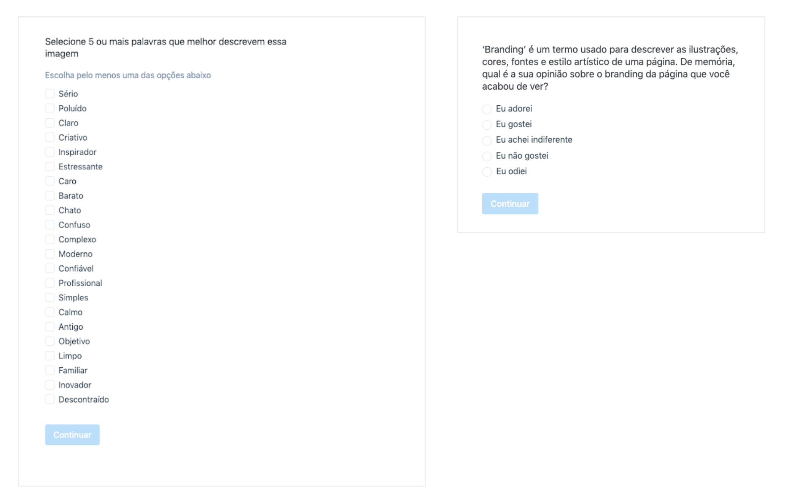
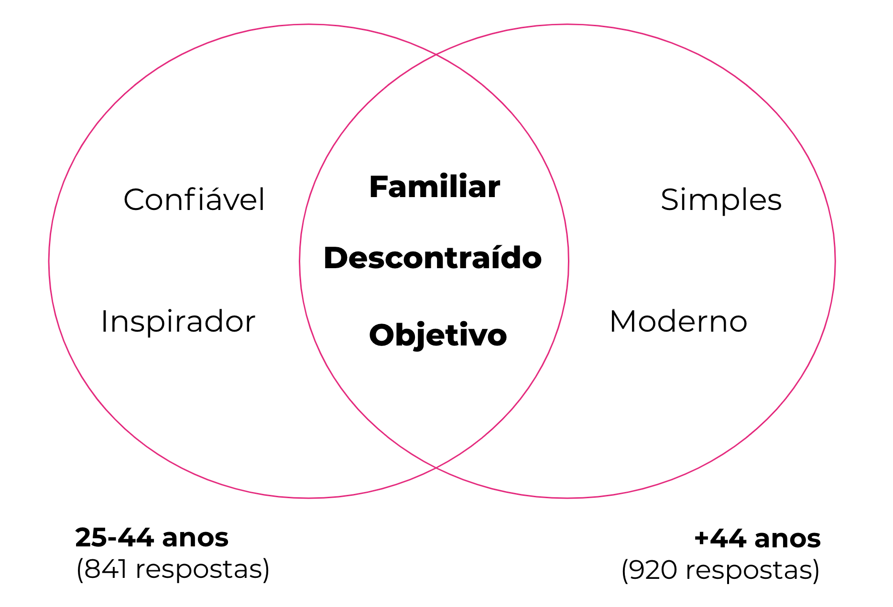
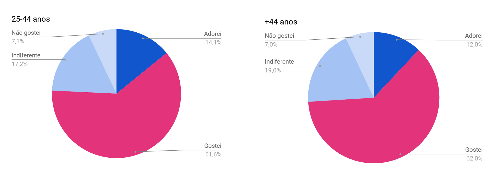
Card sorting
Using the same methodology and user profiles, we also applied card sorting research. The difference of this dynamic is that we also showed some interface variations created in the co-creation, following the new principles.
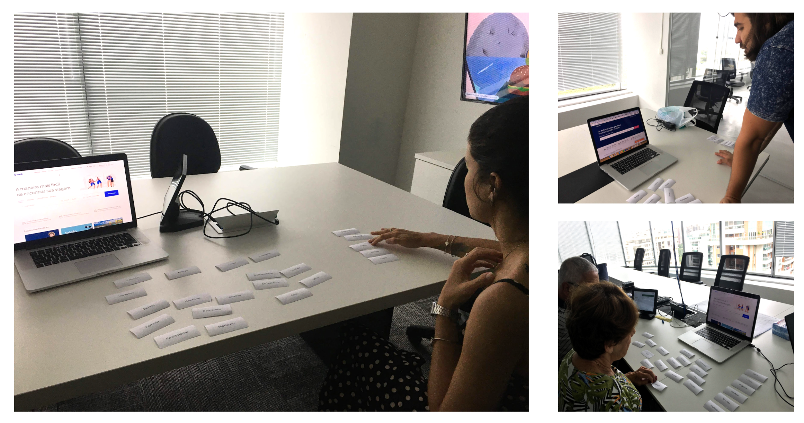
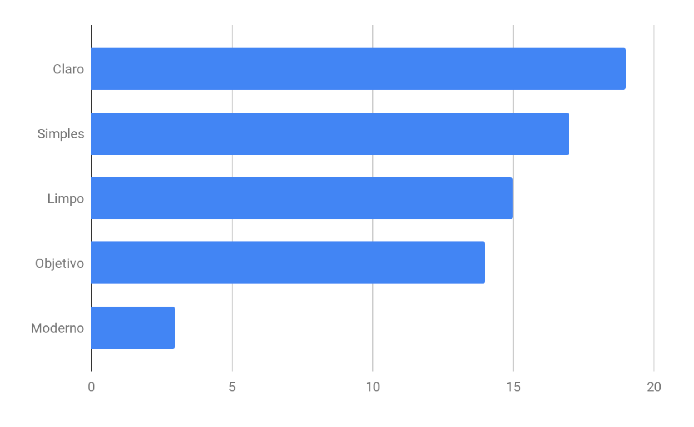
Research at a glance
0K
Users reached in the online survey, split into 2 age groups
0
Design principles defined collaboratively
0%
Of the base exposed in the quantitative A/B test
Results online and in person
- "Objective", tied to principle 1, appears in the top 5 of both polls.
- "Simple" and "Clean", tied to principle 5, are in the top 3 of the qualitative research.
- "Family" and "Relaxed", tied to principle 3, are in the top 2 of the quantitative research.
- "Trustworthy", tied to principle 2, is in the top 5 among 25–44 year olds.
Findings and attention points
- The cleaner, more objective interface transmits more calm and confidence to the traveler.
- One layout variation, with an inspiring photo in the background, aroused greater interest for some profiles than the illustration version.
- Even in an exercise emphasizing aesthetics, several chosen words related to the screen's textual content.
- Timers and FOMO incentives generate anxiety and are often perceived as misleading — though the site's promotions are well regarded.
- The new approach was well accepted by the older audience.
What about quantitative validation?
We also did a quantitative test using Optimize, launching the new version to 20% of the base, in the 2 geographic regions with the highest access and revenue. We tracked revenue, average value per session, abandonment rate and number of hits to product pages and search as metrics. The overall result of the experiment was satisfactory, so we decided to bet on the adoption of the new language, believing it to be more in line with the company's current business strategy and the needs of our users.
How we planned the first delivery
To speed up the first delivery, each designer was responsible for applying the new fundamentals to the Figma screens of their respective team, documenting a new component if necessary. At the same time, there was a reassessment of the organization of the design system, in order to make its application more intuitive, universal and flexible.
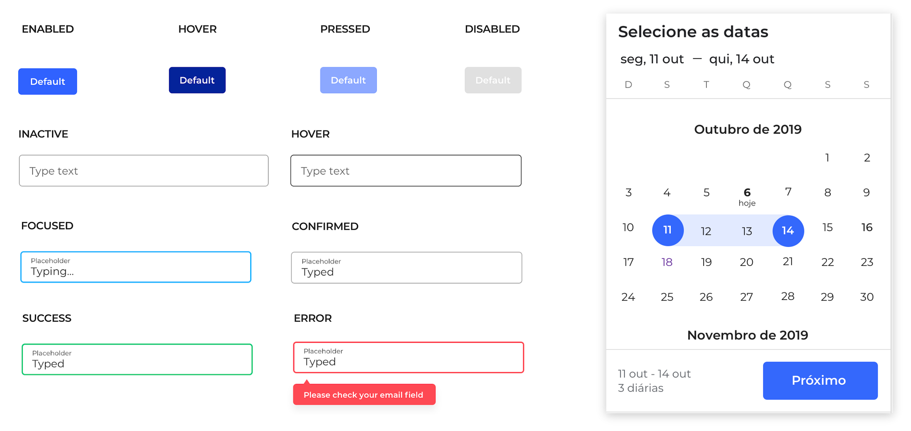
We updated the style of components that already existed in the design system.
Introducing the new language
After adapting the first version throughout the journey, we decided to make a high-fidelity prototype to present to the company, as we consider the use of microinteractions and dynamic images to be of great importance in the application of the new language.
Parts of campaigns and banners aligned with the new principles and fundamentals used in the product.
Challenges and learning
It was a great challenge for the entire design team to justify the need to create a new visual language for some areas of the company. The results of quantitative and qualitative research helped a lot with this argument.
The internationalization project required the technology team to spend several months adapting the entire development part, which allowed us to carry out research and dynamics during this period, without compromising the recurring deliveries of each team.
Another challenge was to define the metrics to validate the new language through A/B testing, since it is a product and branding project involving several subjective factors. We also changed several elements on the same screen, which makes it difficult to understand what performed well on the page. So the focus of this type of test was to monitor key business metrics, checking whether there would be any rejection in the flow and observing user behavior in session recordings.
As we wanted to make a first delivery agile and in line with the project schedule, we initially decided to use some free or low-investment resources to define our foundations, always with the concern of being aligned with the brand's principles and personality.